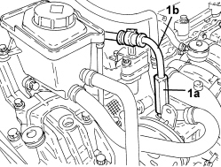
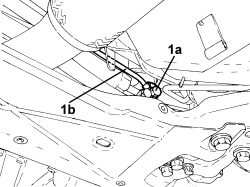

4130B41 SUPPLY PIPE FROM PUMP TO POWER STEERING BOX - R.R. FOR RIGHT HAND DRIVE VERSIONS
- Path
- Procedures > 41 STEERING UNIT > 4130 POWER STEERING > 4130B POWER STEERING HYDRAULIC SYSTEM > 4130B41 SUPPLY PIPE FROM PUMP TO POWER STEERING BOX - R.R. FOR RIGHT HAND DRIVE VERSIONS
- Kind
- repair procedure (removal / refitting; the operation number is the code)
- Applies to
- engines: 2.2 JTS; all production periods
- Interactive page
- https://sloeber94.github.io/elrnDB-aBrrSpdr/en/#/946004018
Applies to: engines: 2.2 JTS; all production periods
 Removing
Removing
 Refitting
RefittingOp. 7055B54 UNDER ENGINE PROTECTION/GUARD - R.R.
- Draw off the power assisted steering fluid from the reservoir using a suitable syringe.
1. Undo the connector (1a) and disconnect the supply pipe from the pump to the power assisted steering box (1b), power assisted steering pump side.

Applies to: engines: 2.2 JTS; all production periods
1. Undo the connector (1a) and disconnect the supply pipe from the pump to the power assisted steering box (1b), power assisted steering box side and then remove it.

Applies to: engines: 2.2 JTS; all production periods
Refitting
Removing- Place the supply pipe from the pump to the power assisted steering box back in its housing.
- Connect the supply pipe from the pump to the power assisted steering box, power assisted steering box side and tighten the connector to the recommended torque.
Component | Fastening | dia | Value (daNm) | Validity |
|---|---|---|---|---|
Supply pipe from pump to power assisted steering box | Connector | M14 | (power assisted steering box side) 3.6 - 4.4 |
- Connect the supply pipe from the pump to the power assisted steering box, power assisted steering pump side and tighten the connector to the recommended torque.
Component | Fastening | dia | Value (daNm) | Validity |
|---|---|---|---|---|
Supply pipe from pump to power assisted steering box | Connector | M16 | (power assisted steering pump side) 3.6 - 4.4 |
Op. 0010T71 POWER STEERING FLUID CHECK LEVEL AND TOP UP IF NECESSARY